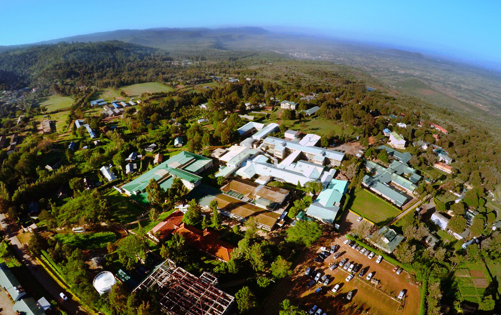

Naivasha: Established in 2001.
Located on the Naivasha/Mai Mahiu Road 5km East of Naivasha Town.
Open 24 hours a day, 7 days a week.
Services: Outpatient, X-Ray, Pharmacy, Normal and CS Delivery
Phone: 0742267335
AIC Kijabe Hospital Main campus on Kijabe mission station established in 1915. Use A104 Highway and descend 5km from Gichengo.
Open 24 hours a day, 7 days a week.
Services: Outpatient, Surgery, ENT, Dental, Maternal Child Health, Obs/Gyn, Oncology, Vision, and much more.
General Inquiries 0709-728-200
After hours: 0787-145-122 (On-Call Manager)
Marira: Outpatient and maternal-child health clinic established in 2006. Located along A-104 just before the viewpoint overlook.
Phone: 0734-492-111
Email: aicmarira@gmail.com
Launched in 2017. Located at Azure Towers, Lantana Road Westlands, Nairobi.
Mon-Fri 8:30 am-5pm
Outpatient services with a family practice consultant, laboratory, pharmacy. Rotating Specialty clinics including orthopaedics, gynecology, and plastic surgery.
Phone: 0703133233